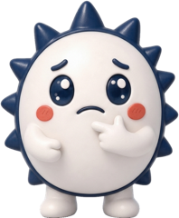

어서와, 자활은 처음이지?
자활 신입 실무자 안내서 — 어려운 말을 쉬운 말로, 절차는 순서대로

참고용이에요. 쉬운 말로 큰 틀을 설명한 것이라, 실제 처리는 그해 지침·법령과 우리 센터 규정, 세무사·노무법인·광역자활센터 확인이 먼저예요. 「기관마다 달라요」 표시는 센터 형태에 따라 다른 부분이에요. 숫자·날짜는 년 기준.
자주 막히는 일을 순서대로 적었어요. 우리 센터 방식이 다르면 센터 방식이 우선이에요.
달마다 챙길 것. 날짜가 주말·공휴일이면 보통 다음 평일까지예요. 세무사·노무법인에 맡긴 일도 자료는 그 전에 보내야 해요.
처음 일주일 동안 챙기면 좋은 것. 체크한 내용은 이 브라우저에만 남아요.
이 안내서는
사회복지를 전공하고 자활센터에 처음 온 실무자가 가장 막히는 곳 — 수급 제도, 회계, 세무, 노무 — 의 말과 절차를 초등학생도 읽을 수 있는 말로 풀어 둔 것이에요. 자활전문강사 김태균이 현장 경험으로 만들었어요.
- 쉬운 말 사전: 낱말마다 쉬운 뜻 → 자활센터에서는 → 자주 하는 실수 → 근거. 찾기 칸에 아무 말이나 적으면 돼요.
- 업무 절차: 4대보험 취득·상실, 실업급여 안내, 부가세, 원천세·연말정산, 근로장려금, 종사자 입·퇴사, 산재.
- 한 해 달력: 달마다 신고·보고 마감. 첫 주 체크: 신입 첫 주에 챙길 것.
- 저장하지 않아요. 서버가 없고, 첫 주 체크만 이 브라우저에 남아요.
- 근거: 『2026년 자활사업 안내』(보건복지부), 국세청·고용24·4대사회보험 정보연계센터·찾기쉬운 생활법령 안내, 사회복지법인 재무·회계 규칙. 쪽수는 지침에 인쇄된 쪽.
- 해마다 고쳐요. 날짜·금액·요율은 바뀌어요. 틀린 곳이나 더 넣었으면 하는 말이 있으면 알려 주세요.
같이 쓰면 좋은 도구: 지역자활센터 업무 도구 · 국기초 가늠표 · 자산형성 길잡이